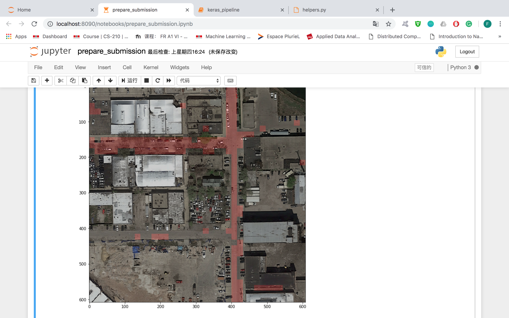
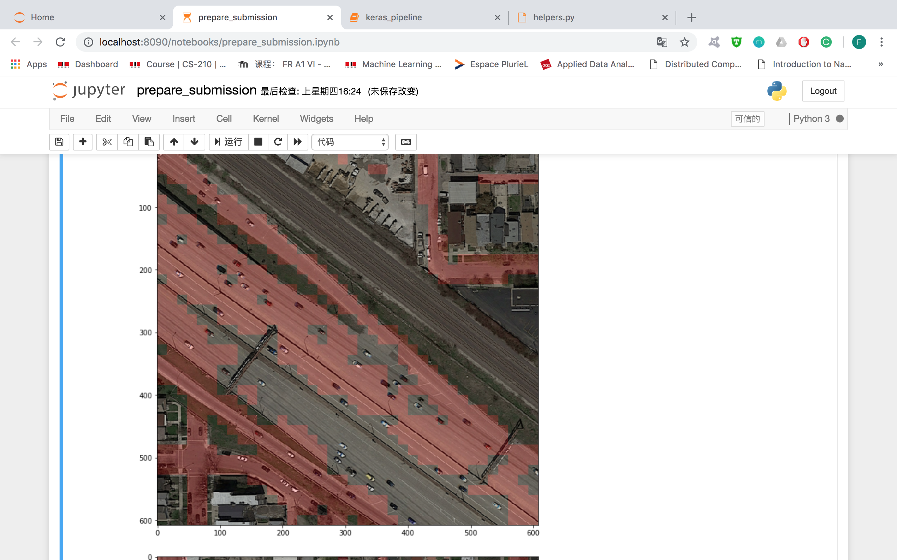

Control panel
Guideline
Choose data
Baseflow
Quickflow
No data
Canton search
Choose canton
Search
Reset
Timeline
Choose dataset
Historical
RCP:45 2020 25%
RCP:45 2020 25% allag
RCP:45 2040 25%
RCP:45 2040 25% allag
RCP:85 2020 75%
RCP:85 2040 75%
Play
Statistics
1 / 3

Caption Text
2 / 3

Caption Two
3 / 3
Caption Three
❮
❯